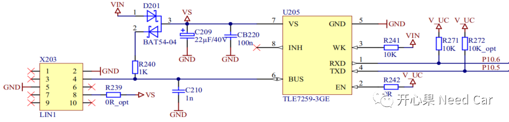
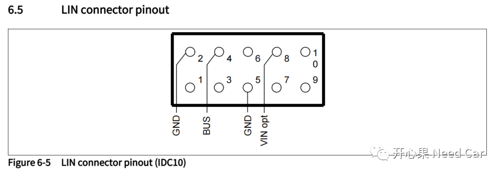
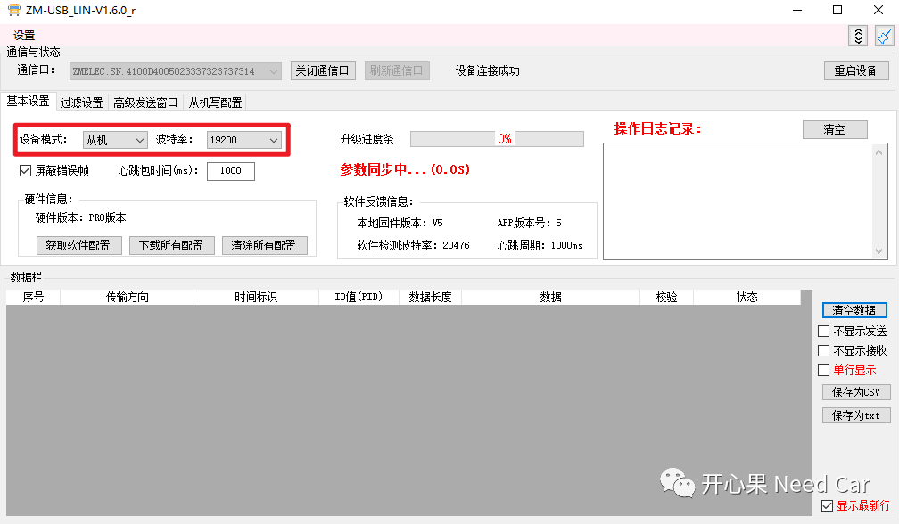
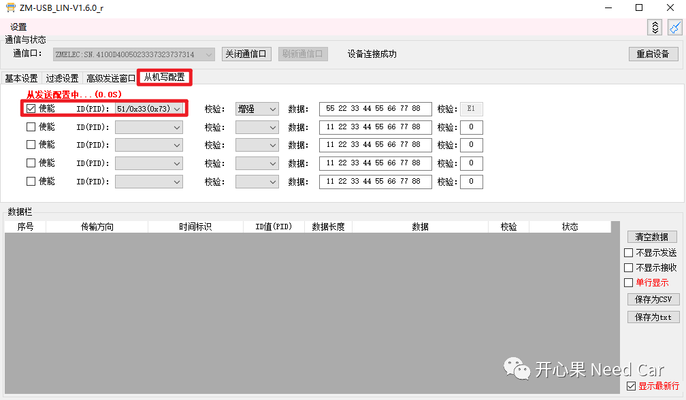
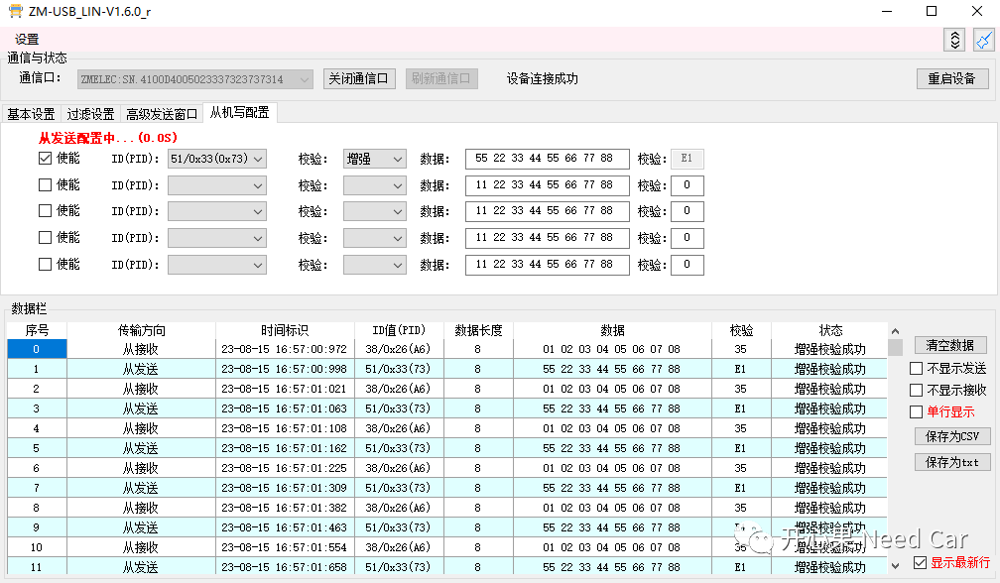
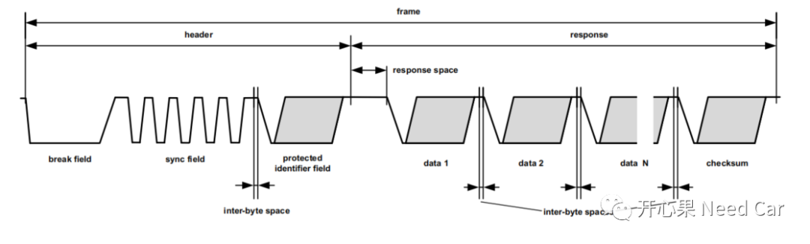
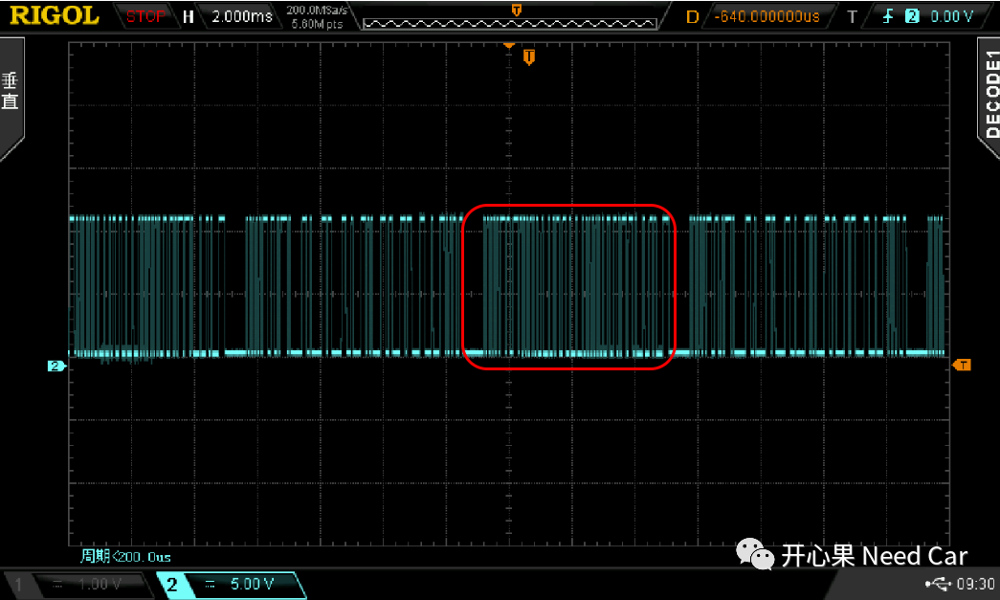
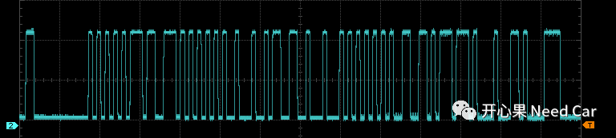
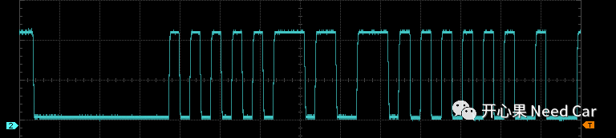
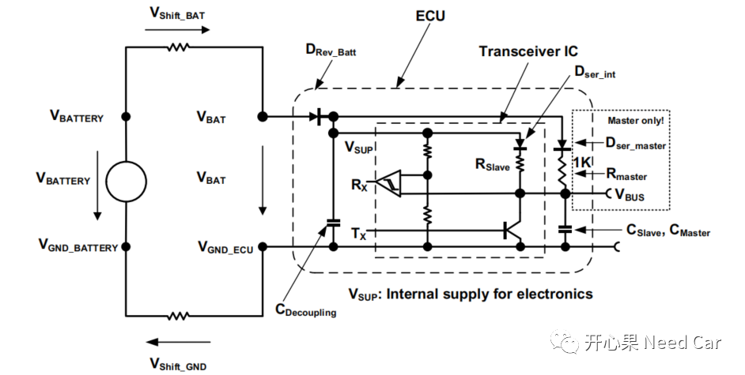

开心果 Need Car · 2023-08-30T07:06:00+08:00 · 微信原文
从事汽车MCU开发的小伙伴，对CAN/CAN FD、Ethernet、Lin这几种总线，应该比较熟悉，即使没具体开发过，也应该听过。如果想更深刻的理解这些总线，实践是最行之有效的方法。在之前的文章中，已经分享了《基于Tricore的CANFD入门工程》、《基于Tricore的UDP/TCP入门工程》、《基于Aurix的以太网实践：TCP Client实现坑点》，本文基于TC397_5V_TFT开发板+Tasking编译器，对英飞凌官网的Master Lin进行了二次开发，助力需要的学习Lin总线的小伙伴，文末有工程源码链接。
1、Lin收发器原理图
TC397_5V_TFT开发板的原理图，可以在英飞凌官网下载，具体下载地址如下：
https://www.infineon.com/dgdl/Infineon-ApplicationKitManual_TC3X7-UM-v02_00-EN.pdf?fileId=5546d462696dbf120169b454383c483d
这里，我们关注Lin收发器（TLE7259-3GE）需要配置的端口，如下图：

上图中，RxD需要使用P10.6，TxD需要使用P10.5，这两个Pin对应ASCLIN2模块。
对于外接的Lin Connector，GND可以接跳线2或者跳线5，LIN BUS对应跳线4，如下所示：

2、Lin Code
本文Lin通信采用了中断收/发处理模式，且开发板采用Master模式。Master负责发送Header，ID=0x26（主响应）/ID=0x33（从响应），通信速率为19200bps。
/* 主函数调用 */void ASCLIN_LIN_Master_Send_Message(void){uint8 id = MASTER_ID_0x26;HandleID = MASTER_ID_0x26;/* Send LIN header */IfxAsclin_Lin_sendHeader(&g_linMaster, &id);}/* 接收中断例程 */IFX_INTERRUPT(ISR_ASCLIN_Rx, 0, ASCLIN_MASTER_RX){/* check Rx response end acknowledgement*/if (IfxAsclin_getRxResponseEndFlagStatus(g_linMaster.asclin)){uint8 id = MASTER_ID_0x26;IfxAsclin_Lin_clearFlagsStatus(g_linMaster.asclin);HandleID = MASTER_ID_0x26;IfxAsclin_Lin_sendHeader(&g_linMaster, &id);}}/* 发送中断例程 */IFX_INTERRUPT(ISR_ASCLIN_Tx, 0, ASCLIN_MASTER_TX){/* check Tx header end acknowledgement */if (IfxAsclin_getTxHeaderEndFlagStatus(g_linMaster.asclin)) /* THE flag*/{if (HandleID == MASTER_ID_0x26){IfxAsclin_Lin_sendResponse(&g_linMaster, Tx_data, 8);}else if(HandleID == SLAVE_ID_0x33){IfxAsclin_Lin_receiveResponse(&g_linMaster, Rx_data, 8);/* Receive interrupt occurred */if (IfxAsclin_getRxFifoFillLevelFlagStatus(g_linMaster.asclin)){uint8 id = MASTER_ID_0x26;HandleID = MASTER_ID_0x26;IfxAsclin_Lin_sendHeader(&g_linMaster, &id);}}IfxAsclin_Lin_clearFlagsStatus(g_linMaster.asclin);}/* check Tx completed */if (IfxAsclin_getTransmissionCompletedFlagStatus(g_linMaster.asclin)){uint8 id = SLAVE_ID_0x33;IfxAsclin_Lin_clearFlagsStatus(g_linMaster.asclin);HandleID = SLAVE_ID_0x33;IfxAsclin_Lin_sendHeader(&g_linMaster, &id);}}
3、通信上位机配置

在“从机写配置”界面配置一个响应ID = 0x33以及对应的数据，采用增强校验，如下所示：

启动程序，Lin数据流如下所示：



波形的局部放大如下所示：



4、Lin源码链接
本文Lin工程源码如下（github）：
https://github.com/Kaixinguo2021/Tasking_TC397_Lin.git
https://github.com/Infineon/AURIX_code_examples/tree/master/code_examples
往期精彩回顾
Autosar网络管理：Bus Sleep模式下，如何接收网络管理报文？
Autosar EcuM：APP由RUN到POST_RUN浅析
基于Hightec+TC375TP的RT-Thread移植详解